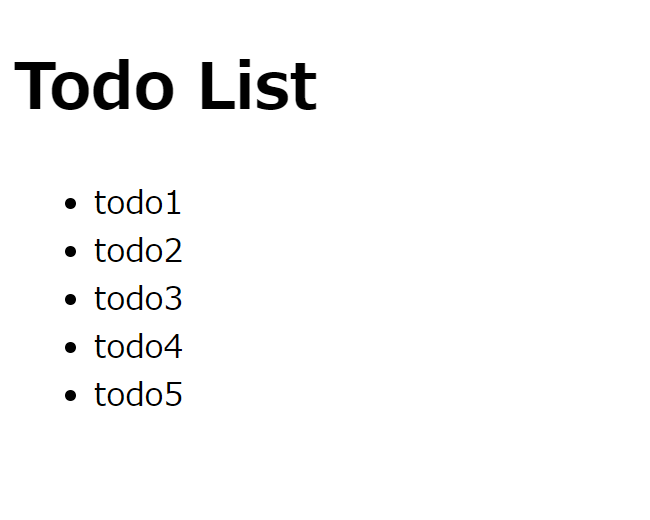
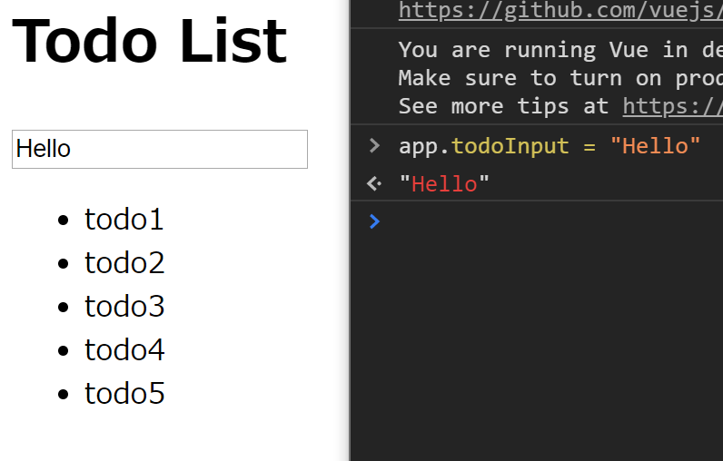
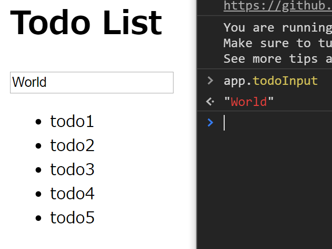
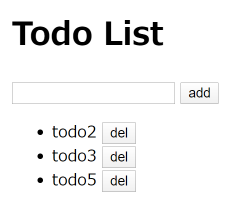

公式ガイドの、コンポーネントの詳細の手前まで読み終えたので、この時点でTodoリストっぽいものを作ってみる。データベースを用意しないため、厳密にはTodoリストではない。
コンポーネントについてはまだ学んでいないため、これから書くコードにはまだ改善の余地があるだろう。
準備
index.htmlを用意する。
<!DOCTYPE html>
<html lang="ja">
<head>
<meta charet="utf-8">
<script src="https://cdn.jsdelivr.net/npm/vue/dist/vue.js"></script>
</head>
<body>
<h1>Todo List</h1>
<script src="script.js"></script>
</body>
</html>
以下の部分でVue.jsを読み込んでいる。
<script src="https://cdn.jsdelivr.net/npm/vue/dist/vue.js"></script>
script.jsを作成しておく。中身はまだ空。
実装する機能
初めにも述べたが、データベースは用意しない。以下の簡単な機能だけ実装する。
勉強を兼ねて、いくらか遠回りしながら作っていく。
配列の要素をli要素として表示
index.htmlに追記する。
<div id="app">
<ul>
<li v-for="todo in todos">{{ todo }}</li>
</ul>
</div>
Vue.jsが用意したテンプレート構文をHTMLに埋め込むことによって、データとDOMを結びつけることができる。v-という接頭辞がついた属性はディレクティブと呼ばれる。今回のv-forディレクティブは、その名の通りfor文を実現する。構文から分かると思うが、JSとかPythonで使われているfor-in文と同じ文法。
式の埋め込みは{{ 式 }}で行う。ガイドではMustache(口髭)構文と呼んでいる。良いネーミングだなと思ったけど、{{ }}の書式をそう呼ぶのはわりと一般的みたい？
さて、そうするとtodosというデータを用意する必要がありそうだが、これはscript.jsで行う。
const app = new Vue({
el: '#app',
data: {
todos: ['todo1', 'todo2', 'todo3', 'todo4', 'todo5']
}
})
elプロパティに、データと結びつく要素を指定する。これはセレクタの書式。elとは恐らくelementの略。dataプロパティに、結びつけるデータを指定する。v-forで利用するために、todosプロパティは配列にする。
こんな感じで、Vue.jsでは「データとDOMを結びつける」みたいなコーディングを行っていくみたい。この部分に関してはD3.jsと通ずるものがある。
index.htmlを開くとこんな感じになる。todosの各要素がli要素の内部に埋め込まれていることが分かる。

面白いことに、todosの変更がリアルタイムで反映される。このことをガイドでは「リアクティブ」と表現している。データとDOMを結び付けておけば、データの変化が起こったとしてもプログラマが再描画を指示する必要がない。
ちなみに、結びついたデータはappのプロパティからアクセスできる。

入力エリアの追加
新しいTodoを追加する入力エリアを追加する。index.htmlにて、input要素を追加する。
<div id="app">
<input v-model="todoInput">
<ul>
<li v-for="todo in todos">{{ todo }}</li>
</ul>
</div>
v-modelディレクティブを上のように指定することで、todoInputプロパティを変更すればinput要素の中身が更新される。また反対に、input要素にテキストを入力すると、todoInputプロパティが更新される。このような仕組みを「双方向バインディング」という。
todoInputについては、script.jsで次のように定義する。
const app = new Vue({
el: '#app',
data: {
todoInput: '',
todos: ['todo1', 'todo2', 'todo3', 'todo4', 'todo5']
}
})
双方向バインディングを実感するためには、次のようにする。app.todoInputの値を変更すると、inputの値が変わる。

inputを変更すると、app.todoInputの値が変更される。

inputはtype属性で、チェックボックスやラジオボタンなど、様々なフォーム要素に変更できる。それに応じてv-modelに結びつく要素の型が変化する。詳しくはガイドのフォーム入力バインディングの項にて。
追加ボタン
addボタンを追加する。ボタンを押したら、input要素の中身がtodosに追加されるようにする。
index.htmlにて、button要素を追加する。
<div id="app">
<input v-model="todoInput">
<button v-on:click="addTodo">add</button>
<ul>
<li v-for="todo in todos">{{ todo }}</li>
</ul>
</div>
v-onディレクティブで、イベントハンドラを指定する。コロン以下の記述はv-onの引数。ここではclickイベントを設定している。
addTodoメソッドを用意する。これはscript.jsで、methodsプロパティ内部に指定する。
const app = new Vue({
el: '#app',
data: {
todoInput: '',
todos: ['todo1', 'todo2', 'todo3', 'todo4', 'todo5']
},
methods: {
addTodo: function(e) {
this.todos.push(this.todoInput)
}
}
})
addTodoプロパティの値はfunction文でなけらばならない。アロー関数だとthisの指す値が変わってしまうため。引数にはイベントオブジェクトを指定する。
削除機能
index.htmlにて、新たにdelボタンを追加する。
<div id="app">
<input v-model="todoInput">
<button v-on:click="addTodo">add</button>
<ul>
<li v-for="(todo,i) in todos">
{{ todo }}
<button v-on:click="delTodo(i)">del</button>
</li>
</ul>
</div>
「配列のi番目を削除」という風に書きたいので、delTodo関数に配列の添え字を指定する。配列の添え字はv-forの構文を上記のようにすることで取得できる。(key, val) in objectのようにして、Objectに対してループを回すこともできる。さらなる機能についてはガイドのリストレンダリングの項にて。
delTodo(i)のように引数を明示すると、第一引数はイベントオブジェクトでは無くなる。もしイベントオブジェクトが欲しいなら、delTodo(i, $event)と指定する。
script.jsは次のようにする。
const app = new Vue({
el: '#app',
data: {
todoInput: '',
todos: ['todo1', 'todo2', 'todo3', 'todo4', 'todo5']
},
methods: {
addTodo: function(e) {
this.todos.push(this.todoInput)
},
delTodo: function(i) {
this.todos.splice(i, 1)
}
}
})
最終的には次のようになる。

形にはなった。今回はここまで。
参考
ガイド - Vue.js